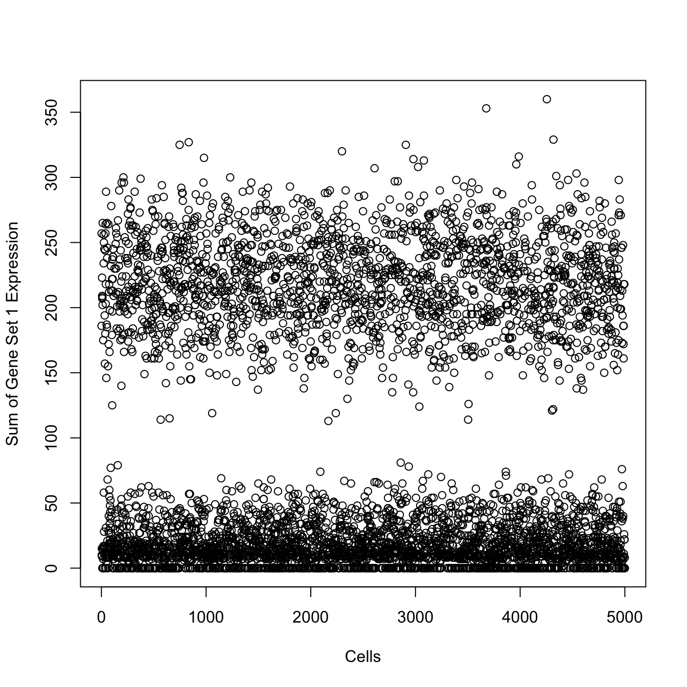
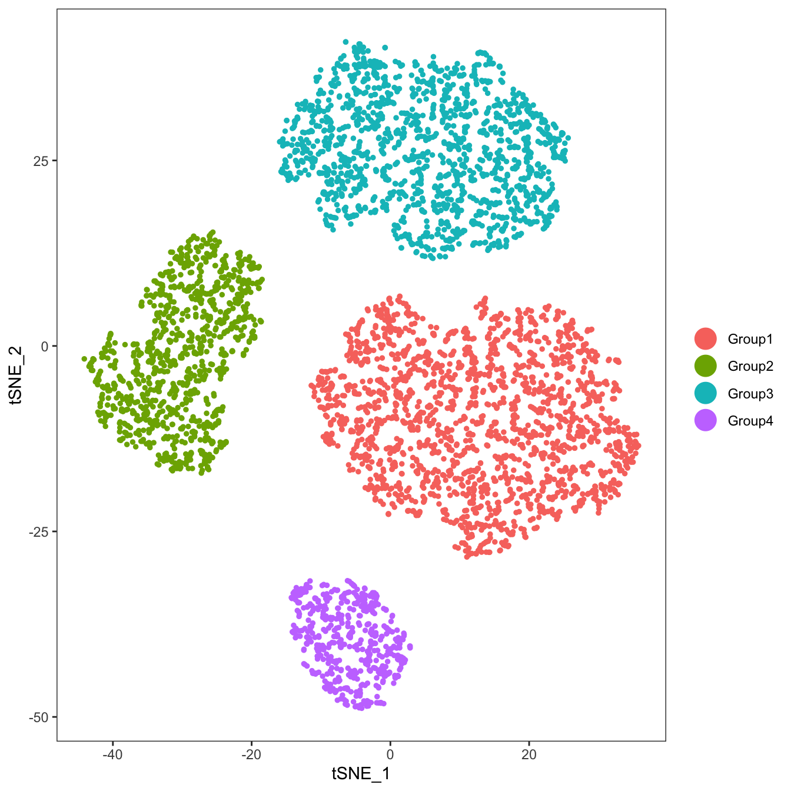
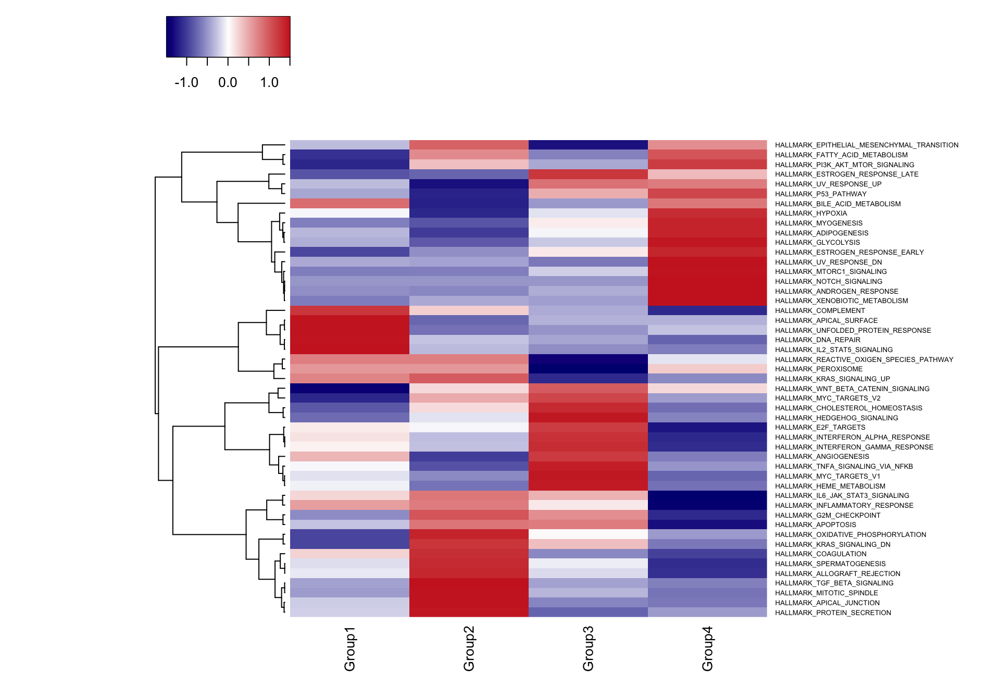

singleseqgset: Single-cell RNAseq gene set enrichment analysis
singleseqgset.RmdIntroduction
Gene set enrichment analysis is a ubiquitious tool used for extracting biologically meaningful information from a genomic dataset. There are many different flavors of tools available for gene set enrichment analysis, but the one most frequently encountered in the wild is the pioneering work of Subramanian et al, PNAS 2005.
They key concept in any gene set enrichment analysis is to compare a metric (e.g. log fold change in gene expression between groups) for genes within a set versus genes outside of a set. Gene sets can be obtained from many locations, including the Molecular Signatures Database (MSigDB) at the Broad and The Gene Ontology Resource. It is important to select gene sets that are best able to answer the biological question(s) at hand. For example, you generally would not use a gene set from the Broad’s C7 (Immunologic Gene Sets) to answer questions about the development of neurons (unless you have a really good reason!).
The approch to gene set enrichment that I have developed here is derived from the work of Di Wu and Gordon K Smyth, Nucleic Acids Research 2012. Wu and Smyth developed a Correlation Adjusted MEan RAnk gene set test (CAMERA). CAMERA is a competitive gene set enrichment test that controls for intergene correlation within the gene set. I have chosen to use CAMERA because it does not rely on the assumption of the independence of genes (since we know that genes often have structured co-expression patterns), nor does it rely on permutations of gene labels or resampling of test samples. CAMERA controls for inter-gene correlation by generating a variance inflation factor based on the degree of inter-gene correlation, and incorporates this variance inflation into a Wilcoxon rank sum test. I recommend checking out the CAMERA publication if you are into the math.
This vignette demonstrates a standard use of singleseqgset on simulated data. We will go through the following steps:
- Simulate expression data using the R package splatter
- Download gene sets of interest using msigdbr
- Add specific gene sets to our simulated data
- Process our data using a standard Seurat workflow (v.2.3.4)
- Use singleseqgset to perform gene set enrichment analysis
- Plot the results in a heatmap
Simulate data using splatter
First, we load up all the necessary pacakges for this vignette, and simulate data to use with splatter.
suppressMessages({
library(splatter)
library(Seurat)
library(msigdbr)
library(singleseqgset)
library(heatmap3)
})
#Create parameters and simulate data
sc.params <- newSplatParams(nGenes=1000,batchCells=5000)
sim.groups <- splatSimulate(params=sc.params,method="groups",group.prob=c(0.4,0.2,0.3,0.1),de.prob=c(0.20,0.20,0.1,0.3),verbose=F)
sim.groups #Check out the SingleCellExperiment object with simulated dataset## class: SingleCellExperiment
## dim: 1000 5000
## metadata(1): Params
## assays(6): BatchCellMeans BaseCellMeans ... TrueCounts counts
## rownames(1000): Gene1 Gene2 ... Gene999 Gene1000
## rowData names(8): Gene BaseGeneMean ... DEFacGroup3 DEFacGroup4
## colnames(5000): Cell1 Cell2 ... Cell4999 Cell5000
## colData names(4): Cell Batch Group ExpLibSize
## reducedDimNames(0):
## spikeNames(0):## DataFrame with 5000 rows and 4 columns
## Cell Batch Group ExpLibSize
## <factor> <character> <factor> <numeric>
## Cell1 Cell1 Batch1 Group1 73324.2901799195
## Cell2 Cell2 Batch1 Group1 71115.1438815874
## Cell3 Cell3 Batch1 Group3 89689.371004738
## Cell4 Cell4 Batch1 Group3 44896.460028516
## Cell5 Cell5 Batch1 Group3 53956.0668720417
## ... ... ... ... ...
## Cell4996 Cell4996 Batch1 Group2 79041.7558615305
## Cell4997 Cell4997 Batch1 Group4 66684.3797711752
## Cell4998 Cell4998 Batch1 Group3 70407.9613848431
## Cell4999 Cell4999 Batch1 Group3 64645.3257427214
## Cell5000 Cell5000 Batch1 Group3 62266.9119469426#We will pull the simulated counts and groups from the sim.groups object
sim.counts <- assays(sim.groups)$counts
groups <- colData(sim.groups)$Group
names(groups) <- rownames(colData(sim.groups))
table(groups)## groups
## Group1 Group2 Group3 Group4
## 1977 992 1536 495We have created some simulated data consisting of 4 clusters, with various fractions of genes differentially expressed between clusters.
Download gene sets of interest using msigdbr
Here, we will use the misigdbr package to download the Human Hallmark Gene Sets. Alternatively, we could download gene sets directly from the Broad’s website: http://software.broadinstitute.org/gsea/msigdb/index.jsp, and read them into R using the GSEABase package.
Note: It is imperative to choose the proper gene annotation style (i.e. either gene symbols or entrez gene IDs; here we just gene symbols) and species (here we use human) for your project. Otherwise, the gene names in your gene sets will not match those in your data, and all gene sets will recieve a “0” enrichment score.
Add gene sets to simulated clusters
We are going to assign 5 gene sets to be exclusively expressed in each cluster. We will select these 20 sets randomly, and each gene will be drawn from a zero-inflated Poisson distribution with the probability of success equal to 50% and a lambda value of 10. This will simulate moderate dropout and relatively low gene counts of expression. Please pardon the dense code for simulating gene sets!
sets.to.use <- sample(seq(1,50,1),20,replace=F)
sets.and.groups <- data.frame(set=sets.to.use,group=paste("Group",rep(1:4,each=5),sep=""))
for (i in 1:nrow(sets.and.groups)) {
set.to.use <- sets.and.groups[i,"set"]
group.to.use <- sets.and.groups[i,"group"]
gene.set.length <- length(h.sets[[set.to.use]])
blank.matrix <- matrix(0,ncol=ncol(sim.counts),nrow=gene.set.length)
rownames(blank.matrix) <- h.sets[[sets.to.use[i]]]
matching <- rownames(blank.matrix) %in% rownames(sim.counts)
if (any(matching==TRUE)) {
matching.genes <- rownames(blank.matrix)[matching]
nonmatching.genes <- setdiff(rownames(blank.matrix),matching.genes)
blank.matrix <- blank.matrix[!matching,]
sim.counts <- rbind(sim.counts,blank.matrix)
} else {
sim.counts <- rbind(sim.counts,blank.matrix)
matching.genes <- rownames(blank.matrix)
}
group.cells <- colnames(sim.counts)[groups==group.to.use]
for (z in group.cells) {
if (any(matching==TRUE)) {
sim.counts[matching.genes,z] <- ifelse(rbinom(length(matching.genes),size=1,prob=0.5)>0,0,rpois(length(matching.genes),lambda=10))
sim.counts[nonmatching.genes,z] <- ifelse(rbinom(length(nonmatching.genes),size=1,prob=0.5)>0,0,rpois(length(nonmatching.genes),lambda=10))
} else {
sim.counts[matching.genes,z] <- ifelse(rbinom(length(matching.genes),size=1,prob=0.5)>0,0,rpois(length(matching.genes),lambda=10))
}
}
}
#Here, we will check out the sum of expression for the first gene set
len.set1 <- length(h.sets[[sets.to.use[[1]]]])
plot(apply(sim.counts[1001:(1000+len.set1),],2,sum),xlim=c(0,5000),xlab="Cells",ylab="Sum of Gene Set 1 Expression")
We have successfully modified the simulated count matrix to contain gene sets of interest in specific clusters. For example, we know that Group1 cells should show gene set enrichment for:
HALLMARK_APICAL_SURFACE, HALLMARK_COMPLEMENT, HALLMARK_DNA_REPAIR, HALLMARK_IL2_STAT5_SIGNALING, HALLMARK_UNFOLDED_PROTEIN_RESPONSE
Seurat workflow on simulated data
Now that we’ve simlulated some data, we will pass it through a standard Seurat workflow (using v2.3.4) to visualize our simulated data. We will ignore the gene sets we added to the count matrix, and will pretend that our first 1000 genes are highly variable genes.
#Pass simulated data to Seurat
ser <- CreateSeuratObject(raw.data=sim.counts)
#Normal Seurat workflow
ser <- NormalizeData(ser)
ser@var.genes <- rownames(ser@raw.data)[1:1000]
ser <- ScaleData(ser,genes.use=ser@var.genes)## Scaling data matrix#We will pretend like the 1000 simulated genes are the "variable genes",
#and we will skip FindVariableGenes from Seurat
ser <- RunPCA(ser,pc.genes=ser@var.genes,do.print=FALSE)
PCElbowPlot(ser)
#Looks like the first 4 PCs capture most of the variance
#We will include the first 5
ser <- RunTSNE(ser,dims.use=1:5)
#Add the simulated data IDs to the Seurat object
data.to.add <- colData(sim.groups)$Group
names(data.to.add) <- ser@cell.names
ser <- AddMetaData(ser,metadata=data.to.add,col.name="real_id")
ser <- SetAllIdent(ser,id="real_id")
#We will skip clustering with Seurat because we already know the true clusters IDs
TSNEPlot(ser,group.by="real_id")
Use singleseqgset to perform gene set enrichment analysis
We will now get to the point of the vignette: gene set enrichment analysis!
First, we will calculate our metric for the gene set enrichment test, which in this case is log fold change between clusters for all genes. We choose to use the log-normalized data that have been corrected for library size. This is stored in the “@data” slot of Seurat.
## [1] "cluster.cells" "log.fc.cluster"The logFC function returns a list of length 2, containing the cells in each cluster and the log fold changes in genes between the cluster of interest and all other clusters. This data is required for the next step, where we calcuate enrichment scores and p values.
gse.res <- wmw_gsea(expr.mat=ser@data,cluster.cells=logfc.data[[1]],log.fc.cluster=logfc.data[[2]],gene.sets=h.sets)## [1] "Removed 1 rows with all z-scores equal to zero."## [1] "GSEA_statistics" "GSEA_p_values"This function returns a two item list, the first containing the test statistics “GSEA_statistics” and the second containing the p values “GSEA_p_values”. We can plot these results as a heatmap the visualize differentially regulated gene sets.
res.stats <- gse.res[["GSEA_statistics"]]
res.pvals <- gse.res[["GSEA_p_values"]]
res.pvals <- apply(res.pvals,2,p.adjust,method="fdr") #Correct for multiple comparisons
res.stats[order(res.stats[,1],decreasing=TRUE)[1:10],] #Top gene sets enriched by z scores## Group1 Group2 Group3
## HALLMARK_COMPLEMENT 5.1574883 -0.09158513 -3.665589
## HALLMARK_IL2_STAT5_SIGNALING 5.0244223 -2.35815436 -3.294866
## HALLMARK_DNA_REPAIR 4.7507909 -1.60640697 -2.170185
## HALLMARK_UNFOLDED_PROTEIN_RESPONSE 4.4252275 -3.43523859 -2.794865
## HALLMARK_APICAL_SURFACE 3.3986861 -0.73663025 0.000000
## HALLMARK_BILE_ACID_METABOLISM 0.0000000 -4.76489163 -3.147855
## HALLMARK_NOTCH_SIGNALING 0.0000000 0.00000000 0.000000
## HALLMARK_PEROXISOME 0.0000000 0.00000000 -2.281640
## HALLMARK_REACTIVE_OXIGEN_SPECIES_PATHWAY 0.0000000 0.00000000 -1.624385
## HALLMARK_ANGIOGENESIS -0.6272414 -1.75751992 0.000000
## Group4
## HALLMARK_COMPLEMENT -7.6289460
## HALLMARK_IL2_STAT5_SIGNALING -3.6373362
## HALLMARK_DNA_REPAIR -3.4498250
## HALLMARK_UNFOLDED_PROTEIN_RESPONSE -1.9363310
## HALLMARK_APICAL_SURFACE 0.0000000
## HALLMARK_BILE_ACID_METABOLISM -0.1628354
## HALLMARK_NOTCH_SIGNALING 0.5230535
## HALLMARK_PEROXISOME -0.3289919
## HALLMARK_REACTIVE_OXIGEN_SPECIES_PATHWAY -0.6633797
## HALLMARK_ANGIOGENESIS -1.4628583## Group1 Group2
## HALLMARK_COMPLEMENT 1.362660e-06 1.000000e+00
## HALLMARK_IL2_STAT5_SIGNALING 2.474256e-06 3.333099e-02
## HALLMARK_DNA_REPAIR 7.637311e-06 1.656575e-01
## HALLMARK_UNFOLDED_PROTEIN_RESPONSE 3.147129e-05 1.381409e-03
## HALLMARK_APICAL_SURFACE 1.508095e-03 5.861109e-01
## HALLMARK_BILE_ACID_METABOLISM 1.000000e+00 7.715670e-06
## HALLMARK_NOTCH_SIGNALING 1.000000e+00 1.000000e+00
## HALLMARK_PEROXISOME 1.000000e+00 1.000000e+00
## HALLMARK_REACTIVE_OXIGEN_SPECIES_PATHWAY 1.000000e+00 1.000000e+00
## HALLMARK_ANGIOGENESIS 5.776566e-01 1.287544e-01
## Group3 Group4
## HALLMARK_COMPLEMENT 0.000711277 3.865785e-13
## HALLMARK_IL2_STAT5_SIGNALING 0.002193161 6.427686e-04
## HALLMARK_DNA_REPAIR 0.044534864 1.195067e-03
## HALLMARK_UNFOLDED_PROTEIN_RESPONSE 0.009422769 8.350102e-02
## HALLMARK_APICAL_SURFACE 1.000000000 1.000000e+00
## HALLMARK_BILE_ACID_METABOLISM 0.003349134 9.274294e-01
## HALLMARK_NOTCH_SIGNALING 1.000000000 7.181930e-01
## HALLMARK_PEROXISOME 0.035581310 8.658554e-01
## HALLMARK_REACTIVE_OXIGEN_SPECIES_PATHWAY 0.127759613 6.211821e-01
## HALLMARK_ANGIOGENESIS 1.000000000 2.130849e-01## [1] "HALLMARK_APICAL_SURFACE"
## [2] "HALLMARK_COMPLEMENT"
## [3] "HALLMARK_DNA_REPAIR"
## [4] "HALLMARK_IL2_STAT5_SIGNALING"
## [5] "HALLMARK_UNFOLDED_PROTEIN_RESPONSE"
Congratulations, you have performed your first gene set enrichment analysis with singleseqgset!